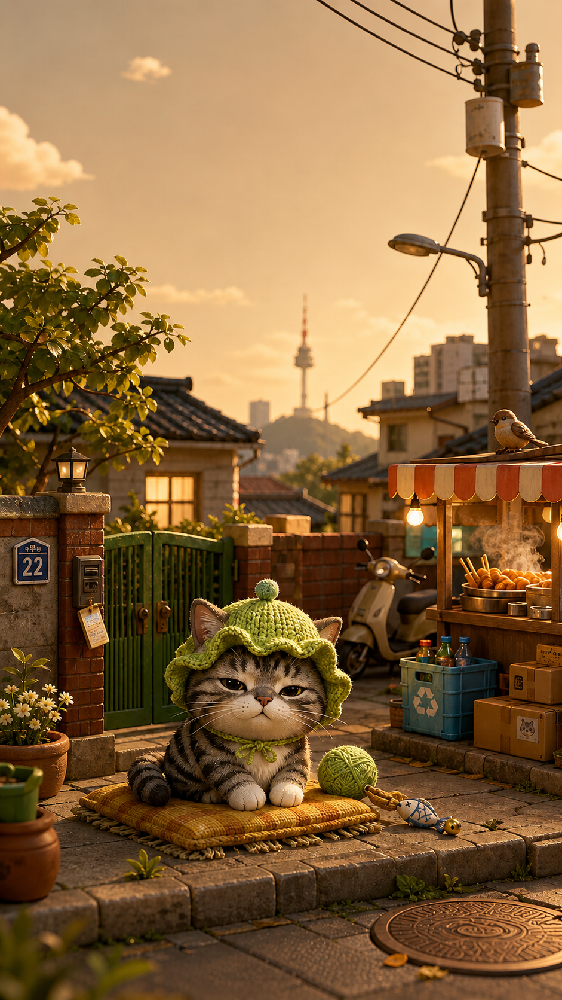
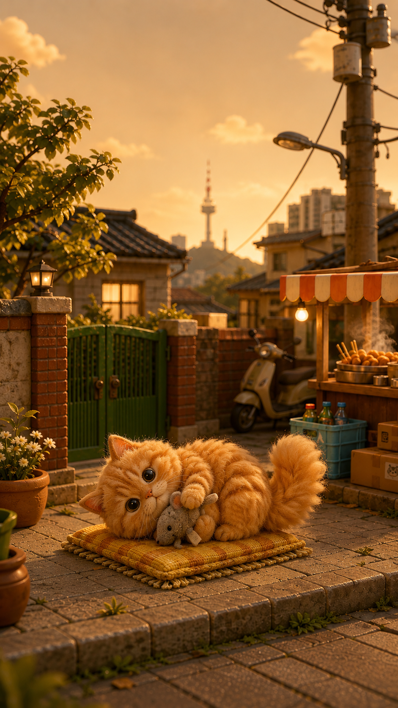

DataReportal 2026 기준 한국 인터넷 보급률은 97.9%, 소셜 미디어 user identities는 인구의 95.4%, 모바일 연결은 인구 대비 118%다.
DataReportal South KoreaResearch base
오늘 제작 판단 기준
시안은 단순 취향이 아니라 모바일 사용 밀도, 잠금화면 개인화 습관, pet owner 정서, 2026 시각 트렌드에서 바로 끌어온 가설로 만든다.
Samsung은 Dynamic Lock Screen 자동 업데이트와 갤러리의 사진/비디오 최대 15개 선택 흐름을 공식 지원한다. 우리 실험은 이 습관 위에 "내 고양이 + 인터랙션"을 얹는다.
Samsung Dynamic Lock ScreenAPPA 2025 리포트를 다룬 PetfoodIndustry는 Gen Z pet owner 증가, multi-pet 성향, 젊은 남성층의 cat ownership 증가를 핵심 변화로 짚었다.
PetfoodIndustry / APPAPinterest Predicts 2026은 nonconformity, self-preservation, escapism을 큰 축으로 보고, Pen Pals, FunHaus, Afrohemian 같은 감정적이고 이야기 있는 스타일을 제시한다.
Pinterest Predicts 2026Canva 2026은 Prompt Playground에서 lo-fi, retro-tech, AI experimentation이 감정적 디자인으로 이동한다고 분석했다. 이 축은 "사진 업로드 후 살아나는 잠금화면"에 잘 맞는다.
Canva Design Trends 2026Google Play의 wallpaper/theme 앱들은 pastel, minimal, neon, cute, anime, nature, space 등 매우 넓은 카테고리를 내세운다. 하나의 90년대 서울풍만으로는 테스트 폭이 좁다.
Themie on Google PlayOperating loop
매시간 실행 루틴
각 슬롯은 조사 10분, 방향 결정 10분, 제작 25분, 페이지 누적 및 QA 15분으로 고정한다. 결과물은 아래 로그와 시안 보드에 계속 추가한다.
- Research check트렌드/타깃/경쟁 앱에서 가설 1개만 뽑는다.
- Design hypothesis누가 왜 잠금화면으로 쓰는지 한 문장으로 쓴다.
- Mock or background시안 1개 또는 배경 실험 1개를 만든다.
- Interaction note자이로/패럴랙스/12fps 영상 중 무엇이 핵심인지 기록한다.
- LogGitHub Pages 페이지에 근거, 이미지, 다음 질문을 누적한다.
Hourly plan
21:00까지 번갈아 진행할 슬롯
Clean Pet Portrait
실제 고양이 사진의 인식성을 최우선으로 두고, 배경은 절제된 프리미엄 라이프스타일 톤으로 낮춘다.
Han River Blue Hour
서울 레트로 대신 한강 노을, 다리 조명, 아파트 창빛으로 한국적이지만 넓고 차분한 배경을 테스트한다.
Collectible Shelf
고양이를 피규어로 만들기보다, 사용자의 방 한켠에 놓인 수집품처럼 배치한다. 굿즈 감도를 검증한다.
Rainy Convenience Store
젖은 아스팔트, 편의점 빛, 얕은 네온 반사로 한국 일상성과 영상감 있는 잠금화면을 만든다.
Pen Pal Scrapbook
Pinterest의 Pen Pals 흐름을 가져와 스티커, 우표, 손글씨 감성을 고양이 사진 주변에 낮게 얹는다.
Rooftop Garden Seoul
옥상 화분, 빨랫줄, 먼 도시 실루엣으로 90년대 골목보다 밝고 생활감 있는 배경으로 확장한다.
Neo Deco Cat
아르데코 기하학, 금속 질감, 깊은 색을 써서 성인 취향의 프리미엄 잠금화면으로 테스트한다.
Quiet Room, Moving Light
침대 옆 램프, 커튼, 노을 빛 먼지 입자로 가장 개인적인 잠금화면 배경을 만든다.
Lo-fi Retro Tech
Canva의 retro-tech 흐름을 반영해 픽셀 UI, 카메라 HUD, 낮은 채도의 CRT 질감을 실험한다.
Busan Sea Breeze
서울 밖의 정서도 검증한다. 해변 산책로, 유리 난간, 바닷빛으로 시원한 배경 카테고리를 만든다.
Soft Wellness
수면, 휴식, 작은 루틴에 맞춘 조용한 고양이 잠금화면. 움직임은 작고 색은 낮게 둔다.
Night Market Future
네온, 전선, 포장마차, 홀로그램 간판을 섞어 과장된 미래 서울을 테스트하고 21:00에 비교한다.
Seed board
첫 누적 시안
오늘 스프린트의 시작점이다. 아래 카드는 실제 구현 파일이 아니라 방향성 검증용 컴포지션 보드이며, 매시간 완성본을 같은 형식으로 추가한다.
 tilt depth
tilt depth
09:00 seed
Clean Pet Portrait
고양이 얼굴 인식성과 프리미엄 사진 느낌을 우선한다. 배경은 얕은 심도, UI는 제거한다.

blue hour
10:00 seed
Han River Blue Hour
한강, 도시 창빛, 부드러운 파란 시간대. 한국적이지만 과거 회상보다 넓은 감정으로 간다.
 meow mail
paper parallax
meow mail
paper parallax
13:00 target
Pen Pal Scrapbook
사진을 꾸미는 재미를 잠금화면에 이식한다. 우표, 마스킹테이프, 엽서 질감을 얇게 쓴다.
 metal glow
metal glow
15:00 target
Neo Deco Cat
귀여움만으로 가지 않고, 어른스러운 배경과 보석 같은 색감으로 유료감도를 테스트한다.

sleep mode
16:00 target
Quiet Room, Moving Light
가장 자주 보는 잠금화면은 피로도가 낮아야 한다. 저녁 루틴과 수면 전 감정에 맞춘다.
 camera HUD
camera HUD
17:00 target
Lo-fi Retro Tech
AI 생성물의 차가움을 낮추고, 오래된 카메라/게임기 같은 친숙함으로 인터랙션을 보여준다.
Accumulated log
결과 누적 로그
매시간 이 영역에 산출물, 근거, 다음 액션을 추가한다.
Time
Track
Output
Decision
08:50
Setup
Research base, 12-slot routine, seed board page
09:00부터 Cat personalization과 Background lab을 교차 진행